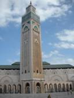
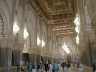
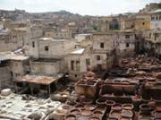
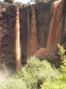
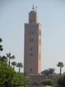
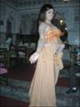

Page 9
Bulletin N° 30
AVRIL 2010
MAROC VILLES IMPERIALES
Du 25 septembre 2009 au 2 octobre 2009
Après 2h30 de vol depuis Toulouse, nous arrivons le vendredi à Casablanca , capitale économique du Maroc comptant 5 millions d'habitants environ.
Nous sommes accueillis à l'aéroport Mohamed V par notre guide accompagnateur AZIZI et rejoignons le car prévu pour le circuit.
Le tour panoramique nous montre une ville moderne avec de très belles villas dans le quartier d'Anfa et la corniche Aïn Diab, station balnéaire chic et mode.
Un arrêt à l'esplanade de la nouvelle mosquée Hassan II, érigée en partie sur la mer, est un complexe cultuel et culturel aménagé sur 9 ha. Nous nous dirigeons ensuite vers la place Mohamed V où se trouve le centre administratif : la préfecture, la poste centrale, le palais de justice, le consulat de France où prône dans sa cour la statue du Maréchal Lyautey sur son cheval.
Les beaux immeubles blancs reflètent l'influence française datant du protectorat de 1912 à 1956.
Notre guide ne manque pas de remercier le maréchal Lyautey pour tous les grands travaux de modernisation du pays : construction de chemins de fer, d'ouvrages d'art, d'hôpitaux, développement de l'irrigation, exploitation des ressources minières�
Le samedi , après une nuit reposante dans un très bel hôtel, nous nous retrouvons pour une visite guidée de la mosquée HASSAN II à 9h, une des plus vastes du monde avec son minaret qui culmine à 200 m et qui est doté d'un laser d'une portée de 30 km dirigé vers la Mecque.
A l'entrée de la salle de prières de 2 ha nous sommes émerveillés par la beauté et la rareté des matériaux et la finition extrêmement soignée des moindres détails de la décoration.
Il en est de même au sous-sol où se trouve la salle d'ablution, le hammam et les bains.
Encore éblouis nous nous dirigeons vers Rabat , capitale administrative de 2 millions d'habitants dont 5 500 travaillent au palais du roi Mohamed VI.

Nous arrivons pour un déjeuner de poissons sur la seule péniche restaurant existant au Maroc.
Après avoir vu le palais du roi avec sa majestueuse façade de pierre jaune, nous visitons le mausolée Mohamed V, dont la coupole en bois de cèdre est recouverte de feuilles d'or, situé sur l'esplanade de la tour Hassan.
Nous terminons par le jardin des Oudayas et la Kasbah, ville ancienne fondée par les andalous en bleu et blanc, le tout entouré de hautes murailles.
Puis route vers Meknes.
Le dimanche visite de Meknes ville de 750 000 habitants, la plus fortifiée avec 3 ceintures de remparts

de 40 km et plusieurs portes : la porte colossale et la plus célèbre de Bab el Mansour, l'artistique porte de Bab el Khemis et la très belle de Bab Berdaine.
Nous avons vu le mausolée de Moulay Ismaïl qui régna 55 ans et fut le roi le plus puissant du monde arabe, les non musulmans sont autorisés à visiter la mosquée.
En contre bas se trouvent les greniers voûtés de Heri el-Souani qui remplis peuvent faire vivre la ville pendant 20 ans. La température y est constante grâce à des murs de 7 m d'épaisseur. A côté le haras comporte 300 piliers et 14 couloirs (en un point il y avait 4 perspectives) et contenait les 12 000 chevaux du sultan.
Après le déjeuner visite des ruines romaines « Volubilis » mises à jour par des archéologues français, fin XIXe siècle. Elles sont remarquables par les nombreuses mosaïques dont les plus belles : la maison de Bacchus, le bain de Diane, les travaux d'hercule.
Au point le plus élevé se dresse le ch�ur de la ville antique : le forum, la basilique, le capitole et l'arc de triomphe de Caracalla. En continuant ver Fès arrêt photo au mausolée à Moulay Idriss qui est un lieu de pèlerinage très fréquenté.
Le lundi visite de Fès , la plus belle et la plus ancienne des villes impériales qui fût fondée en 809.
Elle accueille 1 500 000 habitants.
Nous suivons le guide local pour entrer dans la médina ou « Fès el Bali » et restons groupés pour ne pas se perdre dans ce millier de ruelles où regorgent des bazars d'artisans regroupés par corporation, de marchés de viandes et de légumes, de restaurants, de cafés. Par une ruelle très étroite nous arrivons au quartier des tanneurs et montons sur la terrasse avec une tige de menthe pour l'odeur. Ainsi nous surplombons les puits de teinture et voyons le travail pénible des ouvriers

.
Après un repas dans un palais de la médina, nous visitons deux médersas, et voyons la vaste Mosquée Karaouine qui possède la plus ancienne université du monde de théologie.
Puis direction la ville nouvelle « Fès el Jedid » où se trouve le palais royal avec ses 7 portes favorisant l'accès.
Nous terminerons la journée par un thé à la menthe et des pâtisseries marocaines sur une des terrasses du célèbre hôtel palais Jamaï qui surplombe la médina.
Le mardi départ pour le moyen atlas avec une étape à Beni Mellal en s'arrêtant d'abord chez le chef du village de Bahlil qui nous a invité dans sa maison troglodyte pour un thé à la menthe et nous expliquer la vie du village. Continuation vers Ifrane, station de ski au milieu d'une forêt de cèdres, où nous déjeunons après avoir pris une photo devant le célèbre lion.
Puis une longue route nous amène à Beni Mellal au pied du jebel où tombe, au crépuscule, un violent orage avec un torrent d'eau boueuse descendant de la montagne et qui nous oblige à prendre une déviation pour atteindre l'hôtel.
Le mercredi nous faisons route vers Marrakech , la perle du sud avec 1 250 000 habitants. Nous nous arrêtons aux cascades d'Ozoud,

les plus belles et les plus impressionnantes du Maroc avec une hauteur de 100 m, qui, suite à l'orage, sont marrons rouges et très abondantes.
Les singes batifolent pour nous accompagner dans cette descente. Nous arrivons au palais arabe pour déjeuner.
Ensuite visite du palais Bahia richement décoré et des tombeaux Saâdiens qui renferment les dépouilles de treize sultans et leurs proches.
Le jeudi nous démarrons par les jardins de la Ménara surtout peuplés d'oliviers qui convergent vers un vaste bassin d'eau rectangulaire.
Nous continuons vers la Koutoubia

ou mosquée des libraires dont il ne reste plus que le minaret d'une hauteur de 77 m qui sert d'emblème à la ville .du XIème siècle.
Après midi libre ou visite, en option, des jardins Majorelle pour la majorité.
Au milieu de cette végétation luxuriante nous avons pu voir le mémorial d'Yves Saint-Laurent.
Après 16 h la place de Jemaa el Fna commence à s'animer et le spectacle bat son plein en bordure de la médina. Nous sommes ébahis, charmés et continuons de nous perdre dans les souks les plus beaux et les plus animés du Maroc.
Quel plaisir de marchander et regarder les artisans travailler !
Il faut rentrer se changer pour un dîner spectacle au palais Chahramane de la Médina que nous atteindrons en calèche en visitant une bonne partie de la ville.
Repas et ambiance garantis au son des troupes folkloriques venues des 4 coins du Maroc défilent à côté des danseuses de ventre avec leurs habits typiques.

Le vendredi , avec des valises chargées et la tête remplie de souvenirs, nous retrouvons l'avion du retour pour la France.
Le groupe satisfait de ce séjour que nous ont fait aimer des guides locaux et un accompagnateur cultivé, amusant, de bons conseils et très disponible, promit de revenir pour découvrir les beautés du sud marocain.
________________________________